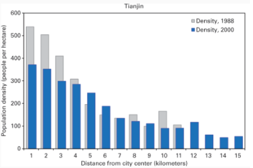
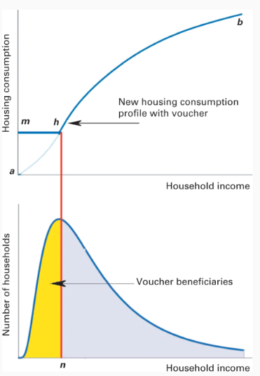
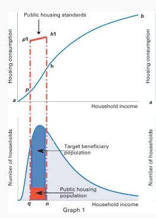
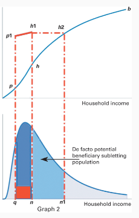

The world is rapidly urbanizing. More than half the world lives in urban areas. By 2050, it is projected that close to 7 billion people will live in urban areas in 2050. If you are reading this, you are almost certainly living in a city.
This blog post is in essence a selective synopsis of the fantastic book - Order Without Design — How Markets Shape Cities’ by Alain Bertaud. The book is largely targeted at urban planners and is probably not going to be a NY Times best seller. However, it lucidly describes several ideas that we residents of cities need to keep in mind.
What recent events have taught is that only an enlightened citizenry can truly safeguard a democracy. A citizenry who is able to critically evaluate proposals and policies of politicians and exercise their franchise accordingly will be rewarded with a responsible government. I hope that this article sheds some light on how cities evolve and what kind of policies support and stymie that evolution; the discerning voter will hopefully find this helpful as you vote for your local councilor or mayor. This is not a substitute for reading the book, so I would still encourage you to pick up a copy and give it a read.
Cities as Labor Markets
Cities are essentially labor markets. It is a geographical area where people live in so that they can meet the demand for labor from the government or private enterprises operating in the area. Without a functioning labor market and jobs, no one would have a reason to move to a city. In developing countries, there is a massive influx of people from rural areas to cities because cities offer better job prospects and higher incomes.
Besides a well-functioning labor markets that often depends on more national level policies, a well-functioning city should offer the following:
- A reasonably short commute to your work place
- Affordable living spaces with easy access to nature or social life
While the first point refers to mobility in a city that is not discussed in this post, the second refers to affordability which is discussed at greater length.
It has been well understood that cities are centers of innovation due to their spatial concentration and that larger cities are more innovative than smaller cities. They benefit from spillover effects where innovations rapidly diffuse across organizations due to flexible labor markets. Consider Silicon Valley where these spillover effects have created a vibrant entrepreneurial hub.
However, a city’s ability to benefit from its scale depends on the two conditions listed above. A city that is not able to offer these will suffer diminishing returns as its size increases.
The speed and efficiency of transportation i.e. mobility, circumscribes the labor market that is accessible to a citizen. Typically, the labor market is defined as the average number of jobs accessible to an individual within a 1-hour commute. With modern and faster modes of transport, the labor market and hence the size of a city increases because the jobs accessible within an hour increase.
If a city’s transportation infrastructure is too slow or inefficient that you cannot travel from point A to point B within an hour or so, it causes the labor market to fragment. This means an employer cannot hire the best talent from across the city but is restricted to hiring from a smaller fraction of the city’s population. A citizen cannot take the most rewarding job he is qualified for if that employer is located outside a reasonable commuting distance. The end result being both employers and citizens suffer and the city’s economic output will be below its true potential. The objective of policy makers here should be to increase the mobility of its citizens, so that the time they need to spend commuting is reduced. Reducing congestion or pollution should be constraints not the objective.
Affordability refers to the ability of households to locate in an area which maximizes their welfare such that they are not forced to spend more than a reasonable portion of their income (usually 30%) on rent. It is natural to think rent control might be the solution to affordable housing at this point, but this approach has serious issues that will be discussed later.
Although we have a clear objective when it comes to maximizing mobility which is to increase the number of jobs accessible to an individual within a one-hour commute, affordability is not so well defined. Different households have different ‘formulas’ for calculating welfare. Households need to tradeoff between rent, location, floor space and quality of construction to determine what is optimal for them. One household may prioritize location and may prefer to live close to the city center sacrificing floor space while a second may prioritize floor space and hence choose to move further away. What policy makers needs to ensure is that households have the freedom to make these trade-offs and choose for themselves, not to make these choices for them.
How Markets Shape Cities
Markets shape cities through real estate prices. The shape and profile of a city is a function of real estate prices and household incomes. The ratio of the floor space available to the land area available is called the Floor Area Ratio (FAR)
Higher land prices support the construction of more floor space on a given piece of land, i.e. the FAR will high. Consider midtown Manhattan where land prices are as high $25,000 per square meter, the cost of construction of an office building is only $5,000 per square meter. If land and capital are the two factors of production at play here, it makes economic sense to substitute capital for land and build more floor space on a given piece of land leading to the creation of skyscrapers. The average FAR in Manhattan is 15.
On the outskirts of cities, the land prices are much lower. If the land prices 40 miles away from Manhattan is only $450 per square meter and construction of a wooden frame home costs $1,600 per square meter, it makes more sense to substitute land for capital leading to low FAR.
The spectacular skylines of Manhattan, Dubai or Downtown Chicago are therefore not a result of intelligent design on the part of planners but the result of markets and brilliant architects.
If this is the case, why don’t all cities have these spectacular skylines? Consider the heart of Paris for instance, where there are only low-rise buildings.
This is because city planners have imposed a limit on the FAR in the center of Paris with the explicit goal of preserving the traditional 18th century appearance of the city. Although this probably does make Paris a more beautiful city in the eyes of many, it does come with a cost. Limited supply of floor space in the center of Paris means price of floor space there ($17,945 per square meter) is much higher than in the center of Chicago ($ 1,944 per square meter) making it unaffordable to low income and middle-income households.
Slums, as in Mumbai are created when the poor simply don’t have the resources to substitute capital for land. It is estimated that in developing countries, a household needs at least $6,000 to be able to afford a studio apartment of 12 square meters. People who cannot afford this have to live in slums.
These people prefer to live in an urban area in squalid conditions due to the better access to the city’s labor market and higher incomes. The extremely small floor space and the narrow lanes that characterizes slums are not a result of poor design but the poorest people maximizing their welfare based on floor space, rent and location. Given the high price of land and the lack of capital that prevents them from building towers, they minimize land consumption by drastically reducing the land allocated to roads and open spaces.
Some governments plan to eliminate slums by building public housing far from the city and shifting slum dwellers there. Typically, these slums fill back up in no time. The government fails to understand that location is an important factor in the housing decision of these people. Moving them to a location far away from the city without adequate public transport restricts their access to the city’s labor market, limiting their incomes.
Household incomes and quality of transportation also greatly influence the shape and densities of cities. As household incomes increase their land consumption increases leading to a fall in density. Faster transportation also means households can move further away from the city where they can consume more land without a commensurate increase in commute times.
The figure below shows how the density of the Chinese city Tianjin decreased over time due to economic growth and higher incomes.

The population density shown above decreases over time as household incomes continue to grow and people move from informal slums into formal construction. The problem of slums in developing countries can thus be addressed only if economic growth makes it possible for slum dwellers to afford formal housing. Governments can support this by making financing more easily available and incentivizing the creation of cheaper building technology that reduces the cost of a studio apartment below $6,000 per unit.
Governments often think they can eliminate slums through regulation, especially by fixing minimum housing consumption. Sanctioning construction only if a housing unit meets certain requirements around floor area can ostensibly ensure satisfactory living conditions for all residents. The consequence of this is that households who cannot afford the price of these units are forced into informal slums. If no such regulations existed, developers might have constructed smaller residential units which would have been affordable to this poorer demographic.
Further designation of such slums as illegal settlements due to their failure to meet minimum housing standards deprives them of essential municipal services such as clean water and garbage disposal that further deprives these people living in poverty.
Making Housing Affordable
Affordable housing is arguable the biggest challenge facing cities today. We are reaching a situation where in cities like San Francisco, only tech workers are able to afford to live in the city. How can a city thrive when its most essential workers such as teachers or hospital nurses have to commute two hours to get to their jobs?
A study by the economists Chang-Tai Hseh and Enrico Moretti reveals that high pricing of houses in US cities leads to a distortion in the spatial allocation of labor that costs about 9.4% of national GDP!
The housing affordability problem is succinctly summarized by the chart below

A household with income d will be able to consume a quantity of housing at a given location corresponding to g. If you have no income , you will not be able to get any housing in a free market system. Clearly the government should intervene in such situations, for instance providing shelters to homeless people. Society may also decide that all households living in the city should be able to enjoy housing consumption equal to h. In a free market, only households with an income e will be able to afford this level of housing consumption, the choice for society and policy makers is how best to allow households with incomes less than e to increase their housing consumption to h.
There are supply side as well as demand side initiatives of varying efficacy that policymakers can pursue to accomplish this. Some of these and their resulting costs and benefits are outlined below.
Increase Urban Land Supply
The government can increase the supply of housing stock by simply removing supply side constraints. This may include simplifying administrative procedures for sanctioning new developments, eliminating FAR restrictions, maximum height of buildings or limits on construction design. The government can also invest in public infrastructure that reduces commute times which will encourage development in other parts of the city that are currently constrained by low connectivity.
The effect of these measures on housing consumption is shown below.

Although these measures would raise housing consumption across all income groups, the impact on the lowest income groups may be muted. Further supply side reforms may be necessary to increase hosing consumption of the poor.
Increase Access to Mortgages
As long as developers are able to quickly respond to demand by building new housing, increasing availability to credit or mortgages can allow households to increase their housing consumption as shown below.

It is to be noted that mortgages are typically available only to creditworthy borrowers meaning this is able to impact only the population earning more than some specified level of income. In the chart above, the population with incomes above d will have increased access to mortgages allowing them to increase consumption from g to g1.
It is to be kept in mind that this policy will simply make housing more expensive if there isn’t an accompanying increase in supply. Also, it is possible to take this policy too far as was the case in the United States in the 2000’s where a concerted policy to make mortgages available to borrowers with low credit ratings led to the sub-prime mortgage boom and bust that imperiled the entire financial system.
Vouchers: Demand Side Subsidy
The government can provide a cash transfer or a voucher to households below a certain income level so as to bridge the gap between the housing consumption they can currently afford and the market cost of socially acceptable housing.

The cost of such a program is easy to calculate, it is simply the number of households at each income level times the size of the subsidy (the difference between the lines mh and curve ah). The higher the income of the target beneficiaries, the lower the required subsidy.
It is important that government design the subsidy program keeping budgetary implications in mind. If the program targets more beneficiaries than it can afford, it simply leads to a long wait list that can last for years. For instance, in Jan 2016, 86,610 households in New York City receive vouchers while there are 143,033 households in the wait list.
Additionally, the benefits of a voucher program are constrained by the supply of housing. It is conceivable that new supply of housing markets will lag the announcement of a voucher program, housing prices will simply go up until new supply becomes available. This program however has the benefit that it gives households the freedom to pick their optimal mix of location, rent, floor space and quality of construction to maximize welfare.
Supply Side Subsidies
Supply side subsidies are given to developers to build a predetermined type of housing for a specified price and specified location. This means that to receive the subsidy, a household has to move to a dwelling that receives this subsidy whose location, size and price has been chosen by a planner.
This is a drawback of this approach given it no longer gives households the freedom to make their own choices.
Public Housing
The government decides to build public housing for a target segment of the population as shown below. The quality of this public housing permits the target population to consume much more housing than would be permissible in a free market as shown below.

When the original consumption of this target segment was initially ph, it now rises to p1h1. The rent of the new public housing will be set at an affordable percentage of the target beneficiaries’ income.Although this sounds like a promising idea, there are several unintended consequences.
Given the population with income less than n now enjoys a standard of housing much higher than the population with income slightly higher than n. Large number of the original beneficiaries will likely sublet their units to higher income households at market or sub-market rents and move to new accommodations.
This makes complete economic sense as long as the sum of the market rent of their new accommodations and the subsidized rent of the public housing (i.e. expense) is less than the market rent of the public housing (i.e. income). The original beneficiaries can pocket the difference as an additional income stream.

The potential beneficiaries of the public housing program now become a much larger segment of the income distribution (qn1 vs qn) which contravenes the original purpose of the program. The only way to prevent this is by imposing and enforcing draconian identification standards on all public housing beneficiaries. If this cannot be done, public housing will simply crowd out private development that would have occurred to cater to the population in the income range n — n1.
Additionally, public housing results in the creation of monolithic buildings that typically end up becoming segregated ghettos for low income families. Further, mobility of these households is severely restricted since they will lose their subsidies if they move. If a household were to increase their income slightly above n, they would lose public housing benefits, the rational decision here would be simply to conceal their high income so as to continue enjoying these benefits.
Inclusionary Zoning
Inclusionary zoning is creative regulation to get developers to pay housing subsidies to the poor without burdening the taxpayer. It typically comprises of a municipal zoning ordinance that requires developers of housing projects to provide 20%–30% of units at a price or rent fixed by the municipal government below market price and defined as affordable. The remaining units can be rented or sold at market rates. Planners incentivize developers to do this by providing a FAR bonus if they include such affordable housing i.e., they can build more apartment units on the same piece of land provided 20% -30% of units are ‘affordable’.
One consequence of this policy should be obvious. The developer will simply pass on the cost of the subsidized units to the buyers of the non-subsidized units. So, the adage that there are no free lunches still rings true.
n example of such an inclusionary zoning project is a building called VIA 27, in New York that has a total of 709 units, out of which 142 (20 %) are being offered as affordable housing. To qualify potential beneficiaries must have an annual income between $ 19,000 and $ 50,000; as of 2016, 29 % of NY households fall in this part of the income distribution.
The households who rent at market price have incomes varying from $ 160,000 to $ 470,000 representing 9% of NY households.
It is clear from these numbers that 9% of the population cannot cross subsidize housing for 29% of the population unless each of these households rent or buy multiple apartments.
In fact, there were 91,000 applicants for 254 such affordable units in a recently build NY apartment who are to be selected by lottery. An affordable housing policy that benefits only 0.27% of qualified beneficiaries is not an effective system.
Given such inclusive zoning is only provided in areas where prices and demand are very high, what it does is provide a small pool of luxury housing for the few poor who are lucky. At the VIA 57 building, the subsidized rents vary from $565 to $ 1,067 per month while market rents vary from $ 3,400 to $ 8,700 per month. This means a single household is getting a subsidy as high as$107,000 a year — a truly staggering amount. Most of these beneficiary households will probably prefer to get a fraction of that amount in cash rather than as an indirect housing subsidy.
Notwithstanding the inefficiency of this mechanism to disperse taxes collected from market tenants, it also raises a question of fairness. A household earning $ 51,000 a year is ineligible for the subsidy while a household earning $ 1000 less gets a $ 100,000 a year subsidy. An equitable allocation of benefits should ensure that all households below a certain income are guaranteed a minimum level of housing consumption.
As in the case of public housing, this creates incentives for existing beneficiary households to game the system and under report incomes so that they can continue to enjoy the massive subsidy. There is also an incentive to sublet at market rates so as to create an additional income stream. Given the subsidy is tied to the specific unit, it is also unlikely that any occupant will ever move out which adversely impacts mobility.
There is a further hidden cost to the government resulting from tax subsidies given to developers to incentivize inclusive zoning. In New York city, the tax incentive program cost the city $ 905,000 per apartment rented below market for the duration of the tax incentive. This amounted to an annual tax cost of $ 45,000 per housing unit. The fact that these costs are hidden and incurred in the future makes it easy to ignore them, but even so the costs are still incurred, just not visibly.
Rent Control
Rent control in its current form was created during WWII as a means for households to cope with the terrible dislocations of war. The destruction of houses, the influx of refugees, the migration of people to work in war industries and soldiers returning home after the war all drove up rents which the government understandably addressed be introducing rent control regulations. However, policies introduced during the midst of war continue to be used as a tool of economic policy.
Rent control does work but only for the few who are lucky enough to live in rent-controlled housing. The first order effect of rent control is in the absence of adequate returns, landlords have little incentive to build new housing meaning that new migrants to the city will not have access to affordable housing.
Further, rent controlled housing can lead to over consumption of housing just as in the case with inclusive zoning. Given the subsidy is tied to a unit rather than a households, rent control curtails mobility significantly. If a family of six with four children moved into a 3-bedroom rent controlled unit 30 years ago, the family will likely continue to stay in the same apartment even though all the children are adults and have left to start their own families elsewhere. A 1997 study by Ed Glaeser and Erzo Luttmer showed that such misallocation of space can lead to a loss in welfare amounting to over $500 million annually.
An empirical study of the effects of rent control in San Francisco by Rebecca Diamond, Tim McQuade and Franklin Qian from Stanford University finds that ‘rent control decreases mobility by 20%’ (as expected) and ‘lowers displacement from San Francisco, especially for minorities’. So, the policy does seem to yield some of the outcomes desired by its architects. However, landlords react to this by reducing housing supplies by 15% by selling the apartments or tearing them down and building new construction. The study concludes that ‘ While rent control prevents displacement of incumbent renters in the short run, the lost rental housing supply likely drove up market rents in the long run, ultimately undermining the goals of the law.’
Another study by David Autor, Parag Pathak and Chris Palmer from MIT showed that lifting of rent controls in Cambridge, Massachusetts resulted in an increase in quality of rental units and a decrease in street crime. However, this did not lead to an increase in affordable housing.
Removal of rent controls without an easing of supply side constraints is only likely to drive out families in rent-controlled housing without resulting in creation of any new dwelling units.
Conclusion
As Hayek famously said, “The curious task of economics is to demonstrate to men how little they really know about what they imagine they can design.”
There needs to be closer collaboration between urban economists and city planners so that markets are factored into city planning and decision making; and a recognition that the role of governments and planners is to facilitate and enable the growth of cities not to control and direct it.
As Bertaud succinctly puts it, designing cities without considering markets is like designing a rocket while ignoring gravity. I hope this article has shed light on some of the underlying market forces that shape cities and allows you to critically assess policies that are likely to be put forth by policy makers to address the housing affordability crises facing most cities in the world today.
It also remains to be seen what kind of impact a once in a century disaster such as the Covid-19 pandemic has on cities. Will remote work become a norm for many companies that frowned upon it earlier? Will this be a secular trend across several industries? If so, it will radically alter the shape of cities as they become more dispersed with people move away from cities seeking open spaces and less congestion. The demands on urban infrastructure and transportation could also change considerably as a result.
PS: Please note that I have only discussed a sample of the topics that are originally addressed in the book. I have completely skipped over the topic of the design of urban transportation which is the lifeblood of any city.
Other References
1)[https://ourworldindata.org/urbanization] 2)[https://freakonomics.com/podcast/rent-control/]